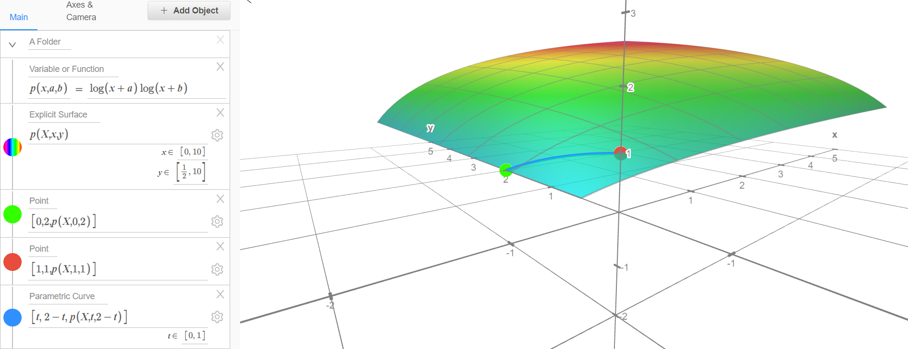
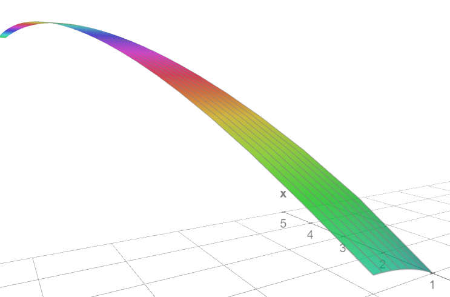

Show that $\ln(x + 1)^2 \geq \ln(x)\ln(x + 2)$
This is a problem that I did two months prior to the creation of this page. So I don't actually remember how I came up with this solution but I just think the tricks I used were neat. I remember that, for some reason, I couldn't find a way to prove the inequality using pure algebraic methods (whatever that means). The tricks that I used for this involves multivariable calculus, which definitely feels very overkill for a seemingly simple problem like this. Which is why I felt smart when I came out with it and thought that it was clever, lol.
The strategy is to use a very intuitive lemma that for a multivariable function $f$ and two points $\vec{v}$ and $\vec{u}$, if the directional derivative of $f$ in the direction of $\vec{u} - \vec{v}$ is never negative from $\vec{v}$ to $\vec{u}$, then that implies that $f(u) \geq f(v)$. I didn't even include a proof for this, and I'm sure that my description of this lemma is not very concrete yet due to my low knowledge of analysis. But let's say that this lemma is assumed to be true, then here's how it can be used to solve the $\ln$ inequality
The strategy is to create the function $$p(x, a, b) = \ln(x + a)\ln(x + b)$$ and prove that $p(x, 1, 1) \geq p(x, 0, 2)$ for all $x \geq 1$ by proving that the directional derivative in the direction that goes from $[x, 0, 2]$ to $[x, 1, 1]$ (which is $[0, 1, -1]$) is always positive on that interval/line segment. Then, you show that for any $x$ that you lock into, the directional derivative of $p$ on the line segment and direction that was mentioned earlier is always positive. Intuitively, you can think of this as whatever $x \geq 1$ that you lock into, as you go from $p$ at $[x, 0, 2]$ which is $\ln(x)\ln(x + 2)$ to $[x, 1, 1]$ which is $\ln(x + 1)^2$, you're always going upwards, or in other words, the result of $p$ always increases. Also, since you're locking x, you can actually somewhat visualize that in 3D, so let's do that for some fun. Here it is:  It can be seen in there that you're always going up when going from the green point, which is $[x, 2, 0]$ to the red point $[x, 1, 1]$ when $x = 1$. When $x$ gets higher, the curve actually gets flatter and flatter, so it's not really visible that the value is always increasing, but it does. Here's the link for the graph
So you would imagine creating a parametric function $g(x, t)$ for any $x \geq 1$ and $t \in [0, 1]$ that returns something with the same sign as the directional derivetive of $p$ that was mentioned. In other words, $g(x, t)$ is equal to: $$ \begin{align*} g(x, t) &= \nabla p(x, t, 2 - t) \cdot \begin{bmatrix} 0 \\ 1 \\ -1 \end{bmatrix} \end{align*} $$ Since the gradient of p is equal to: $$ \nabla p(x, a, b) = \begin{bmatrix} \frac{\ln(x + b)}{x + a} + \frac{\ln(x + a)}{x + b} \\ \frac{\ln(x + b)}{x + a} \\ \frac{\ln(x + a)}{x + b} \\ \end{bmatrix} $$ then $g(x, t)$ is equal to: $$ \begin{align*} g(x, t) &= \begin{bmatrix} \frac{\ln(x + 2 - t)}{x + t} + \frac{\ln(x + t)}{x + 2 - t} \\ \frac{\ln(x + 2 - t)}{x + t} \\ \frac{\ln(x + t)}{x + 2 - t} \\ \end{bmatrix} \cdot \begin{bmatrix} 0 \\ 1 \\ -1 \end{bmatrix} \\ &= \frac{\ln(x + 2 - t)}{x + t} - \frac{\ln(x + t)}{x + 2 - t} \end{align*} $$ Notice that that I'm dotting the gradient vector with a non-normalized vector. Directional derivatives in a certain direction vector technically needs you to dot the gradient vector with a normalized direction vector, but all we care about in here is the sign of the derivative so it doesn't really matter whether or not it's normalized since the magnitude just scales the result of the directional derivative.Now I just need to show that it's always non-negative on the constraint $x \in [1, \infty]$ and $t \in [0, 1]$: $$ \begin{align*} 0 &\leq g(x, t) \\ 0 &\leq \frac{\ln(x + 2 - t)}{x + t} - \frac{\ln(x + t)}{x + 2 - t} \\ \end{align*} $$ It's clear from here that $x + t \leq x + 2 - t$ for any values for $x, t$. And $x + t \geq 0$ & $x + 2 - t \geq 0$ for any $x \in [1, \infty]$ and $t \in [0, 1]$. Therefore, from the obvious assumption that: $$ a \geq b \land c \geq d \implies \frac{a}{d} \geq \frac{b}{c} $$ and $a \geq b \geq 1$ implies $\ln(a) \geq \ln(b)$, then you can conclude that $$ \frac{\ln(x + t)}{x + 2 - t} \leq \frac{\ln(x + 2 - t)}{x + t} $$ is true. Also here's the graph for g(x, t) for any $x \geq 1$ and $t \in [0, 1]$, you can see it's always positive but the graph itself isn't really helpful anyway: 
Therefore, from the asummed lemma from earlier, you can conclude that $\ln(x + 1)^2 \geq \ln(x)\ln(x + 2)$. I am legitimately curious how you're supposed to do this with basic algebraic methods and assumptions though. I actually can't think about how to do it like that. Also, using this technique, it would be interesting to try to find other inequalities that might be solvable using it. It might also be an interesting exercise to find an inequality for the points $u$ and $v$ such that the function $p$ with a locked $x$ parameter that satisfies $p(x, u) \geq p(x, v)$. Basically a generalization of this problem.